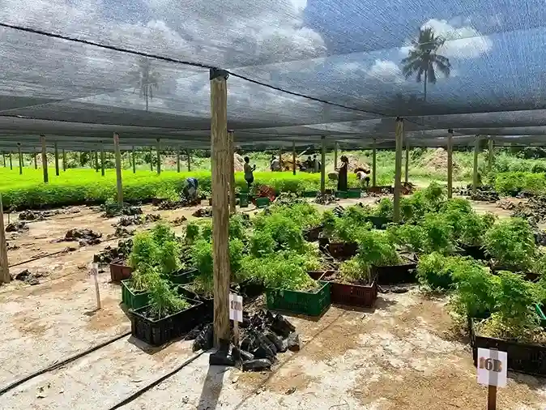
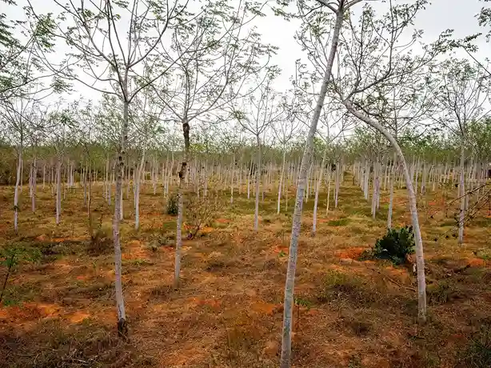

Why Most Tree Planting Projects Fail Before Planting Even Starts
Many projects are already off-track before the first tree is planted. Let’s talk about how we can do better.

Thoughts from the field, lessons from our work, and gentle wisdom on building beautiful, scalable restoration systems.

Climate agencies are increasingly confident that El Niño conditions are likely to develop in 2026. For Kenya’s tree-planting sector, this could be a beautiful opportunity — if we prepare with love and care.
Read Full ArticleMany projects are already off-track before the first tree is planted. Let’s talk about how we can do better.

A gentle comparison of nursery models and how hybrid systems can create more joy and better results.